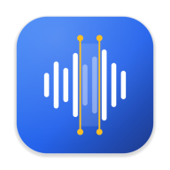

PODcut 리모컨
PC와 연결
PC의 PODcut에서 공유 → 휴대폰 리모컨…을 열고 QR코드를 찍거나, 8자리 코드를 넣으세요.
아이폰에서 알림을 받으려면 먼저 공유 버튼 → 홈 화면에 추가를 누르고, 홈 화면 아이콘으로 연 뒤 연결하세요. 사파리와 홈 화면 앱은 연결이 따로입니다.
확인 중…PC 목록 ›
진행 상황
완료 알림
분석이 끝나면 이 휴대폰에 알려 줍니다.

PC의 PODcut에서 공유 → 휴대폰 리모컨…을 열고 QR코드를 찍거나, 8자리 코드를 넣으세요.
아이폰에서 알림을 받으려면 먼저 공유 버튼 → 홈 화면에 추가를 누르고, 홈 화면 아이콘으로 연 뒤 연결하세요. 사파리와 홈 화면 앱은 연결이 따로입니다.